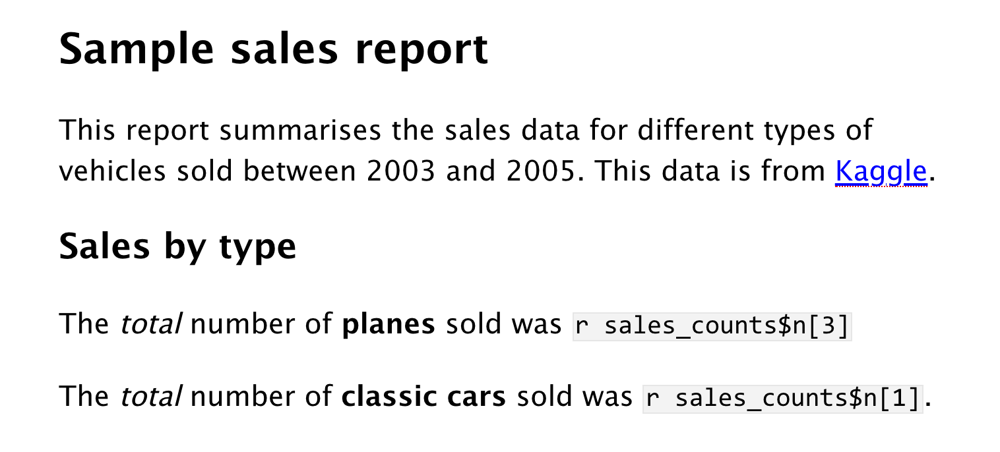

2 Berichte mit R Markdown erstellen
Lernziele
- Ein Projekt strukturieren können
- Einen einfachen reproduzierbaren Bericht mit R Markdown erstellen können
- Codeblöcke, Tabellen, Bilder und inline R code in einem R Markdown-Dokument erstellen können
2.1 Verwendete Funktionen
- Eingebaute Funktionen (diese können immer ohne das Laden von Paketen verwendet werden)
- tidyverse (alle diese können mit
library(tidyverse)verwendet werden)- readr::
read_csv(),row_spec() - dplyr::
count(),filter() - ggplot2::
geom_bar(),geom_col(),ggplot(),labs()
- readr::
- Andere (Sie müssen jedes Paket laden, um diese zu verwenden)
- knitr::
include_graphics(),kable() - kableExtra::
kable_classic(),row_spec() - tinytex::
install_tinytex()
- knitr::
Lade den R Markdown Spickzettel herunter.
2.2 Einrichtung
Hier sind die Pakete, die wir in diesem Kapitel verwenden werden. Sie müssen sie möglicherweise installieren, wie in Section 1.6.1 erklärt, wenn das Ausführen des untenstehenden Codes im Konsolenbereich den Fehler Error in library(package_name) : there is no package called ‘packagename’ erzeugt.
2.3 Ein Projekt organisieren
Bevor wir irgendeinen Code schreiben, müssen wir uns zuerst organisieren. Projects in RStudio sind eine Möglichkeit, alle Dateien, die Sie für ein Projekt benötigen, zu gruppieren. Die meisten Projekte beinhalten scripts, Datendateien und Ausgabedateien wie den von dem Skript erstellten PDF-Bericht oder Bilder.
2.3.1 Standardarbeitsverzeichnis
Zuerst erstellen Sie ein neues directory (d. h. einen Ordner) auf Ihrem Computer, in dem Sie alle Ihre R-Projekte aufbewahren. Nennen Sie es etwas wie “R-Projekte” (vermeiden Sie Leerzeichen und andere Sonderzeichen). Stellen Sie sicher, dass Sie wissen, wie Sie dieses Verzeichnis mit dem Finder oder Explorer Ihres Computers erreichen können.
Wenn möglich, verwenden Sie kein Netzwerk- oder Cloud-Laufwerk (z. B. OneDrive oder Dropbox), da dies manchmal Probleme verursachen kann. Wenn Sie von einem Netzwerklaufwerk aus arbeiten und Probleme haben, ist ein hilfreicher Test, Ihren Projektordner auf den Desktop zu verschieben, um zu sehen, ob das das Problem löst.
Als nächstes öffnen Sie
In einigen Versionen von Windows 10 und 11 können lange Pfadnamen, die länger als 260 Zeichen sind, Probleme verursachen. Setzen Sie Ihr Standardarbeitsverzeichnis auf einen Pfad, dessen Länge deutlich darunter liegt, um Probleme zu vermeiden, wenn R temporäre Dateien beim Rendern eines Berichts erstellt. Wenn Sie Probleme haben, ist ein hilfreicher Test, Ihren Projektordner auf den Desktop zu verschieben, da dies wahrscheinlich einen viel kürzeren Pfadnamen hat als die meisten anderen Ordner auf Ihrem Computer.
Sie können das Arbeitsverzeichnis manuell auf einen anderen Ort setzen mit Menübefehlen:
2.3.2 Ein Projekt starten
Beginnen Sie, indem Sie ein Verzeichnis in Ihrem Standardprojektverzeichnis erstellen, in dem Sie alle Ihre Unterlagen für diesen Kurs aufbewahren; wir schlagen vor, es etwas wie ADS-23 zu nennen.
Um ein neues Projekt für die Arbeit in diesem Kapitel zu erstellen:
File > New Project… - Benennen Sie das Projekt
02-reports - Speichern Sie es im
ADS-23Verzeichnis
RStudio wird sich selbst neu starten und mit diesem neuen Projektverzeichnis als Arbeitsverzeichnis öffnen.


Klicken Sie auf die Registerkarte Dateien im unteren rechten Bereich, um den Inhalt des Projektverzeichnisses zu sehen. Sie werden eine Datei mit dem Namen 02-reports.Rproj sehen, die eine Datei enthält, die alle Projektinformationen enthält. Wenn Sie im Finder/Explorer sind, können Sie darauf doppelklicken, um das Projekt zu öffnen.
Abhängig von Ihren Einstellungen sehen Sie möglicherweise auch ein Verzeichnis namens .Rproj.user, das Ihre spezifischen Benutzereinstellungen enthält. Sie können dies und andere “unsichtbare” Dateien, die mit einem Punkt beginnen, ignorieren.
Speichern Sie niemals ein neues Projekt innerhalb eines anderen Projektverzeichnisses. Dies kann einige schwer zu lösende Probleme verursachen.
2.3.3 Dinge benennen
Bevor wir neue Dateien erstellen, ist es wichtig, zu überprüfen, wie Sie Ihre Dateien benennen. Das mag etwas pedantisch erscheinen, aber klare Benennungsregeln zu befolgen, damit sowohl Menschen als auch Computer leicht Dinge finden können, wird Ihnen auf lange Sicht das Leben erleichtern. Hier sind einige wichtige Prinzipien:
- Datei- und Verzeichnisnamen sollten nur Buchstaben, Zahlen, Bindestriche und Unterstriche enthalten, mit einem Punkt (
.) zwischen dem Dateinamen und extension (das bedeutet keine Leerzeichen!) - Konsistente Groß-/Kleinschreibung (setzen Sie eine Regel fest, um es sich leicht zu merken, wie immer Kleinbuchstaben verwenden)
- Verwenden Sie Unterstriche (
_) zur Trennung von Teilen des Dateinamens, wie Titel und Datum, und Bindestriche (-) zur Trennung von Wörtern in jedem Teil (z. B.social-media-report_2021-10.Rmd) - Benennen Sie Dateien nach einem Muster, das in einer sinnvollen Reihenfolge alphabetisch sortiert wird und es Ihnen erleichtert, die Datei zu finden, die Sie suchen
- Präfixieren Sie einen Dateinamen mit einem
Unterstrich, um ihn an den Anfang der Liste zu setzen, oder präfixieren Sie alle Dateien mit Zahlen, um ihre Reihenfolge zu steuern
Zum Beispiel sind diese Dateinamen ein Durcheinander:
report.docreport final.docData (Customers) 11-15.xlsCustomers Data Nov 12.xlsfinal report2.docproject notes.txtVendor Data November 15.xls
Hier ist eine Möglichkeit, sie zu strukturieren, damit ähnliche Dateien dieselbe Struktur haben und es für einen Menschen einfach ist, die Liste zu scannen oder Code zu verwenden, um relevante Dateien zu finden. Sehen Sie, ob Sie herausfinden können, was das Letzte sein sollte.
_project-notes.txtreport_v1.docreport_v2.docreport_v3.docdata_customer_2021-11-12.xlsdata_customer_2021-11-15.xls
Denken Sie über andere Möglichkeiten nach, die oben genannten Dateien zu benennen. Sehen Sie sich einige Ihrer eigenen Projektdateien an und überlegen Sie, was Sie verbessern können.
2.4 R Markdown
Während dieses Kurses verwenden wir R Markdown, um reproduzierbare Berichte mit einem Inhaltsverzeichnis, Text, Tabellen, Bildern und Code zu erstellen. Der Text kann mit markdown geschrieben werden, einer Methode zur Festlegung von Formatierungen wie Überschriften, Absätzen, Listen, Fettdruck und Links.
2.4.1 Neues Dokument
Um ein neues R Markdown-Dokument zu öffnen, klicken Sie Wichtige Infos. Sie können auch den Autorennamen ändern. Behalten Sie das Ausgabeformat als HTML bei.
Nachdem Sie ein neues Dokument geöffnet haben, speichern Sie es, indem Sie auf important_info nennen (wenn Sie auf einem Mac sind und die Datei extension sehen können, nennen Sie sie important_info.Rmd). Diese Datei wird automatisch in Ihrem Projektordner (d. h. Ihrem Arbeitsverzeichnis) gespeichert, sodass Sie diese Datei nun in Ihrem Dateibetrachter sehen sollten.
Wenn Sie ein neues R Markdown-Dokument zum ersten Mal öffnen, sehen Sie einen Haufen Begrüßungstext, der so aussieht:

Führen Sie die folgenden Schritte aus:
- Ändern Sie den Titel in “Wichtige Informationen” und den Autor in Ihren Namen
- Löschen Sie alles nach dem Setup-Block
- Lassen Sie eine Zeile nach dem Setup-Block frei und tippen Sie “## Meine Infos” (mit den Rauten, aber ohne die Anführungszeichen); stellen Sie sicher, dass keine Leerzeichen vor den Rauten sind und mindestens ein Leerzeichen nach den Rauten vor dem Untertitel
- Lassen Sie eine Zeile frei und klicken Sie auf das Menü zum Einfügen eines neuen Codes (ein grünes Kästchen mit einem C und einem Pluszeichen) und wählen Sie
R
Ihr Markdown-Dokument sollte jetzt etwa so aussehen:
2.4.2 Codeblöcke
Was Sie erstellt haben, ist ein Untertitel und ein Codeblock. In R Markdown wird alles, was in einem grauen Codeblock geschrieben steht, als Code angesehen, und alles, was im weißen Raum (zwischen den Codeblöcken) geschrieben wird, wird als normaler Text betrachtet (die tatsächlichen Farben hängen davon ab, welches Thema Sie angewendet haben, aber wir beziehen uns auf das Standardweiß und Grau). Dies erleichtert die Kombination von Text und Code in einem Dokument.
Wenn Sie einen neuen Codeblock erstellen, sollten Sie beachten, dass der graue Kasten mit drei Rückwärts-Apostrophen \``` beginnt und endet. Ein häufiger Fehler ist es, diese Rückwärts-Apostrophen versehentlich zu löschen. Denken Sie daran, dass Codeblöcke und Texteingaben unterschiedliche Farben haben - wenn die Farbe bestimmter Teile Ihres Markdown nicht richtig aussieht, überprüfen Sie, ob Sie die Rückwärts-Apostrophen nicht gelöscht haben.
In Ihrem Codeblock schreiben Sie den Code, den Sie in Section 1.7 erstellt haben.
In Section 1.2 haben wir Sie gebeten, Code in die Konsole einzugeben. Jetzt möchten wir, dass Sie Code in Codeblöcke in R Markdown-Dateien eingeben, um den Code reproduzierbar zu machen. Auf diese Weise können Sie Ihren Code jederzeit neu ausführen, wenn sich die Daten ändern, um den Bericht zu aktualisieren, und Sie oder andere können den Code überprüfen, um Fehler zu identifizieren und zu beheben.
Es gibt jedoch immer noch Zeiten, in denen Sie Code in die Konsole statt in ein Skript eingeben müssen, beispielsweise wenn Sie ein neues Paket installieren. In diesem Buch werden Codeblöcke mit gekennzeichnet, ob Sie sie in der Konsole ausführen oder den Code zu einem Skript hinzufügen sollten.
2.4.3 Code ausführen
Wenn Sie in einem R Markdown-Dokument arbeiten, gibt es mehrere Möglichkeiten, Ihre Codezeilen auszuführen.
Zuerst können Sie den Code, den Sie ausführen möchten, markieren und dann auf
Alternativ können Sie die grüne “Play”-Schaltfläche oben rechts im Codeblock drücken, und dies wird alle Codezeilen in diesem Block ausführen.
Noch besser ist es, einige der Tastenkürzel für R Studio zu lernen. Um eine einzelne Codezeile auszuführen, stellen Sie sicher, dass sich der Cursor in der Codezeile befindet, die Sie ausführen möchten (er kann sich irgendwo befinden), und drücken Sie
Führen Sie Ihren Code mit jeder der oben genannten Methoden aus. Sie sollten sehen, dass die Variablen name, age, today und christmas im Umgebungsbereich erscheinen. (Starten Sie R neu, um zurückzusetzen.)
2.4.4 Inline-Code
Wir sprechen immer wieder davon, R Markdown für reproduzierbare Berichte zu verwenden, aber es ist einfacher, Ihnen zu zeigen, warum dies so mächtig ist und Ihnen einen Einblick zu geben, wie dieser Kurs (hoffentlich!) die Art und Weise ändern wird, wie Sie mit Daten für immer arbeiten!
Ein wichtiges Merkmal von R Markdown ist, dass Sie Text und Code kombinieren können, um Werte in Ihre Texte einzufügen, indem Sie Inline-Coding verwenden. Wenn Sie jemals einen Wert oder Text von einer Datei in eine andere kopieren und einfügen mussten, wissen Sie, wie einfach es sein kann, Fehler zu machen. Inline-Code vermeidet dies. Wieder ist es einfacher, Ihnen zu zeigen, was Inline-Code macht, als es zu erklären, also lassen Sie es uns versuchen.
Kopieren und fügen Sie zuerst diesen Text in den weißen Raum unterhalb Ihres Codeblocks ein. Wenn Sie einen anderen Variablennamen als christmas verwendet haben, sollten Sie diesen mit dem Namen des Objekts aktualisieren, das Sie erstellt haben, aber ändern Sie sonst nichts.
Mein Name ist `r name` und ich bin `r age` Jahre alt.
Es sind `r christmas - today` Tage bis Weihnachten,
was mein Lieblingsfeiertag ist.Sie können kein Diagramm mit Inline-R anzeigen. Diagramme sollten aus Codeblöcken angezeigt werden. Wir kommen bald darauf zurück, wie man das macht.
2.4.5 Ihre Datei stricken
Jetzt werden wir knit, oder die Datei in einen Dokumententyp unserer Wahl kompilieren. In diesem Fall erstellen wir eine Standard-HTML-Datei, aber Sie werden lernen, wie man andere Dateien wie Word und PDF im Verlauf dieses Kurses erstellt. Um Ihre Datei zu stricken, klicken Sie
R Markdown wird ein neues HTML-Dokument erstellen und anzeigen, aber es wird auch automatisch diese Datei in Ihrem Arbeitsverzeichnis speichern.
Wie durch Zauberei erscheint dieser etwas seltsame Text, den Sie kopiert und eingefügt haben, nun als normaler Satz mit den Werten, die aus den von Ihnen erstellten Objekten gezogen wurden.
Mein Name ist Emily und ich bin 36 Jahre alt. Es sind 84 Tage bis Weihnachten, was mein Lieblingsfeiertag ist.
Sie können auch stricken, indem Sie den folgenden Code in die Konsole eingeben. Geben Sie diesen niemals in ein Rmd-Skript selbst ein, da es versuchen würde, sich selbst in einer Endlosschleife zu stricken.
2.5 Daten laden
Lassen Sie uns nun ein weiteres Beispiel dafür versuchen, Markdown zu verwenden, aber diesmal anstatt Objekte zu verwenden, die wir von Grund auf neu erstellt haben, werden wir eine Datendatei einlesen.
Speichern und schließen Sie Ihr important_info.Rmd Dokument. Öffnen und speichern Sie dann ein neues Markdown-Dokument, diesmal mit dem Namen sales_data.Rmd. Sie können wieder alles nach dem Setup-Block löschen. Fügen Sie library(tidyverse) zum Setup-Block hinzu, damit die tidyverse-Funktionen für Ihr Skript verfügbar sind.
2.5.1 Online-Quellen
Lassen Sie uns zuerst versuchen, Daten zu laden, die online gespeichert sind. Erstellen Sie einen Codeblock in Ihrem Dokument und kopieren, fügen Sie den unten stehenden Code ein und führen Sie ihn aus. Dieser Code lädt einige simulierte Verkaufsdaten.
- Die Daten sind in einer
.csv-Datei gespeichert, daher verwenden wir die Funktionread_csv(), um sie zu laden. - Beachten Sie, dass die URL in doppelten Anführungszeichen steht - ohne diese funktioniert sie nicht.
Wenn Sie eine Fehlermeldung erhalten, die so aussieht:
Error in read_csv(“https://psyteachr.github.io/ads-v2/data/sales_data_sample.csv”) :
could not find function “read_csv”
Das bedeutet, dass Sie tidyverse nicht geladen haben. Überprüfen Sie, ob library(tidyverse) im Setup-Block steht und dass Sie den Setup-Block ausgeführt haben.
Dieser Datensatz ist simulierte Verkaufsdaten für verschiedene Fahrzeugtypen (ursprünglich von Kaggle), wobei jede Zeile der Daten eine einzelne Bestellung ist. Es gibt mehrere Möglichkeiten, einen Datensatz in R zu betrachten und zu überprüfen. Führen Sie jede der folgenden Aktionen durch und machen Sie sich Notizen darüber, welche Informationen jeder Ansatz zu geben scheint. Wenn Sie mehr Informationen zu jeder dieser Funktionen wünschen, können Sie die Hilfedokumentation mit ?function aufrufen:
- Klicken Sie auf das Objekt
sales_onlineim Umgebungsbereich - Führen Sie
head(sales_online)in der Konsole aus - Führen Sie
summary(sales_online)in der Konsole aus - Führen Sie
str(sales_online)in der Konsole aus - Führen Sie
View(sales_online)in der Konsole aus
2.5.2 Lokale Datendateien
Häufiger werden Sie jedoch mit Datendateien arbeiten, die lokal auf Ihrem Computer gespeichert sind. Aber wo sollten Sie all Ihre Dateien speichern? Normalerweise möchten Sie alle Ihre Skripte und Datendateien für ein einzelnes Projekt in einem Ordner auf Ihrem Computer haben, dem working directory des Projekts, und wir haben bereits das Hauptverzeichnis 02-reports für dieses Kapitel eingerichtet.
Sie können Dateien in Unterordnern innerhalb dieses Hauptprojektverzeichnisses organisieren, wie das Speichern aller Rohdatendateien in einem Unterordner namens data und das Speichern aller Bilddateien in einem Unterordner namens images. Die Verwendung von Unterordnern hilft, zu verhindern, dass ein einzelner Ordner zu überfüllt wird, was wichtig ist, wenn Sie an großen Projekten arbeiten.
Erstellen Sie in Ihrem 02-reports Verzeichnis einen neuen Ordner namens data, laden Sie eine Kopie der Verkaufsdatendatei herunter, und speichern Sie sie in diesem neuen Unterordner.
Um Daten aus einer lokalen Datei zu laden, können wir wieder die Funktion read_csv() verwenden, aber diesmal geben wir anstelle einer URL den Unterordner und den Dateinamen an.
Verwenden Sie die Tab-Autovervollständigung, wenn Sie Dateinamen in einem Codeblock eingeben. Nachdem Sie das erste Anführungszeichen eingegeben haben, drücken Sie Tab, um ein Dropdown-Menü der Dateien in Ihrem Arbeitsverzeichnis zu sehen. Sie können den Namen des Unterordners oder der Datei eingeben, um es einzugrenzen. Dies ist sehr nützlich, um ärgerliche Fehler aufgrund von Tippfehlern oder Dateien, die nicht dort sind, wo Sie sie erwarten, zu vermeiden.
Dinge zu beachten:
- Sie müssen die Dateiendung (in diesem Fall
.csv) einschließen - Der Unterordnername (
data) und der Dateiname werden durch einen Schrägstrich/getrennt - Genauigkeit ist wichtig, wenn Sie einen Tippfehler im Dateinamen haben, wird Ihre Datei nicht gefunden; denken Sie daran, dass R groß- und kleinsch
reibungsabhängig ist - Sales_Data.csv ist eine völlig andere Datei als sales_data.csv, soweit es R betrifft.
2.6 Einen Bericht schreiben
Wir werden einen grundlegenden Bericht für diesen Verkaufsdatensatz mit R Markdown schreiben, um Ihnen einige der Funktionen zu zeigen. Wir werden fast jeden Aspekt dessen, was wir Ihnen gerade zeigen, im Verlauf dieses Kurses erweitern; das wichtigste Ergebnis ist, dass Sie anfangen, sich mit der Funktionsweise von R Markdown vertraut zu machen und zu verstehen, wozu Sie es verwenden können.
2.6.1 Datenanalyse
Für diesen Bericht werden wir nur einige einfache Verkaufsstatistiken für drei Fahrzeugtypen vorstellen: Flugzeuge, Motorräder und klassische Autos. Wir werden darauf zurückkommen, wie Sie diesen Code selbst schreiben können, in ?sec-summary. Für jetzt sehen Sie, ob Sie der Logik des Codes folgen können, den wir Ihnen durch die Codekommentare erklären.
Erstellen Sie einen neuen Codeblock, kopieren, fügen Sie den folgenden Code ein und führen Sie ihn aus, und sehen Sie sich dann sales_counts an, indem Sie auf das Objekt im Umgebungsbereich klicken. Beachten Sie, dass es nicht wirklich wichtig ist, ob Sie sales_local oder sales_online in der ersten Zeile verwenden, da sie identisch sind.
Da jede Zeile des Datensatzes einen Verkauf darstellt, gibt uns dieser Code eine schöne und einfache Möglichkeit zu sehen, wie viele Verkäufe von jedem Fahrzeugtyp gemacht wurden; er zählt einfach die Anzahl der Zeilen in jeder Gruppe.
| PRODUCTLINE | n |
|---|---|
| Classic Cars | 967 |
| Motorcycles | 331 |
| Planes | 306 |
Einfach ein Objekt für sich auf einer Zeile “ausdrucken”. Section 2.6.5 zeigt Ihnen, wie Sie die Tabelle in verschiedenen Formaten für Ihren Bericht ausdrucken.
2.6.2 Textformatierung
Sie können den visuellen markdown-Editor verwenden, wenn Sie RStudio Version 1.4 oder höher haben. Dies wird ein Knopf oben in der Quellfenster sein, und die Menüoptionen sollten jedem vertraut sein, der mit Software wie Microsoft Word gearbeitet hat.
Dies ist nützlich für komplexe Stile, aber Sie können auch diese häufigen Klartext-Stil-Markups verwenden:
- Überschriften werden erstellt, indem Sie Untertitel mit einer oder mehreren Rauten (
#) und einem Leerzeichen präfixieren (lassen Sie das Leerzeichen nicht aus). Wenn Sie ein Inhaltsverzeichnis einschließen, wird dies aus Ihren Dokumentüberschriften erstellt. - Formatieren Sie Text mit Kursivschrift oder Fettdruck, indem Sie den Text mit ein oder zwei Sternchen oder Unterstrichen umgeben.
- Erstellen Sie Listen mit Zahlen, Sternchen oder Bindestrichen vor den Elementen. Rücken Sie Elemente ein, um verschachtelte Listen zu erstellen.
- Erstellen Sie Links so:
[psyTeachR](https://psyteachr.github.io/) - Laden Sie den R Markdown Spickzettel herunter, um mehr zu erfahren.
Kopieren und fügen Sie den unten stehenden Text in den weißen Raum unterhalb des Codeblocks, der die Daten lädt, ein. Speichern Sie die Datei und klicken Sie dann auf Stricken, um die Ergebnisse zu sehen. Es wird ein wenig unordentlich aussehen, da es den Code und die Nachrichten vom Laden der Daten enthält, aber keine Sorge, wir werden das bald loswerden.
## Beispiel-Verkaufsbericht
Dieser Bericht fasst die Verkaufsdaten für verschiedene Fahrzeugtypen zusammen, die zwischen 2003 und 2005 verkauft wurden. Diese Daten stammen von [Kaggle](https://www.kaggle.com/kyanyoga/sample-sales-data).
### Verkäufe nach Typ
Die *gesamte* Anzahl verkaufter **Flugzeuge** betrug `r sales_counts$n[3]`
Die *gesamte* Anzahl verkaufter **klassischer Autos** betrug `r sales_counts$n[1]`.Das obige Beispiel-Markdown (und der Rest in diesem Buch) wird für den regulären Editor gezeigt, nicht für den visuellen Editor. Im visuellen Editor sehen Sie nicht die Rauten, die Überschriften erstellen, oder die Sternchen, die fetten und kursiven Text erstellen. Sie sehen auch nicht die Rückwärts-Apostrophen, die Inline-Code kennzeichnen.

Wenn Sie versuchen, die Rauten, Sternchen und Rückwärts-Apostrophen zum visuellen Editor hinzuzufügen, werden Sie frustriert sein, da sie verschwinden. Wenn Sie Erfolg haben, wird Ihr Code im regulären Editor so aussehen:
Versuchen Sie, den Inline-Code mit dem zu vergleichen, was in der Tabelle sales_counts steht. Zu beachten:
- Das
$-Zeichen wird verwendet, um bestimmte Variablen (oder Spalten) in einem Objekt mit der Syntaxobject$variableanzugeben. - Eckige Klammern mit einer Zahl, z. B.
[3], geben eine bestimmte Beobachtung an - Also fragt
sales_counts$n[3]den Inline-Code, die dritte Beobachtung der Variablennim Datensatzsales_onlineanzuzeigen.
Fügen Sie eine weitere Zeile hinzu, die die Gesamtzahlen der Motorräder mit Inline-Code meldet. Verwenden Sie entweder den visuellen Editor oder Text-Markups, um Fettdruck und Kursivschrift hinzuzufügen, damit es den anderen entspricht.
2.6.3 Codekommentare
Im obigen Code haben wir Code Kommentare verwendet, und es ist wichtig zu betonen, wie nützlich diese sind. Sie können Kommentare in R-Blöcken mit dem Rautensymbol (#) hinzufügen. R wird Zeichen vom Rautensymbol bis zum Ende der Zeile ignorieren.
Es ist normalerweise eine gute Praxis, einen Codeblock mit einem Kommentar zu beginnen, der erklärt, was Sie dort tun, besonders wenn der Code nicht im Text des Berichts erklärt wird.
Wenn Sie Ihre Objekte klar benennen, müssen Sie oft keine klärenden Kommentare hinzufügen. Zum Beispiel, wenn ich die drei oben genannten Objekte total_number_of_sales, first_year und last_year genannt hätte, würde ich die Kommentare weglassen. Es ist eine Kunst, Ihren Code gut zu kommentieren, aber versuchen Sie, Kommentare hinzuzufügen, während Sie durch dieses Buch arbeiten - es wird Ihnen helfen, Ihr Lernen zu festigen, und wenn das z
ukünftige Sie Ihren Code überprüft, werden Sie dem vergangenen Sie für die Klarheit danken.
2.6.4 Bilder
Wie das Sprichwort sagt, malt ein Bild tausend Worte und manchmal möchten Sie Ihre Daten mithilfe von Visualisierungen kommunizieren.
Erstellen Sie einen Codeblock, um ein Diagramm der Daten in Ihrem Dokument nach dem bisher geschriebenen Text anzuzeigen. Wir verwenden einen Code, den Sie in Chapter 8 genauer kennenlernen werden, um ein einfaches Balkendiagramm zu erstellen, das die Verkaufsdaten darstellt – konzentrieren Sie sich darauf zu versuchen, zu verstehen, wie Teile des Codes auf das erstellte Diagramm abgebildet werden.
Kopieren und fügen Sie den unten stehenden Code ein. Führen Sie den Code in Ihrem Markdown aus, um das Diagramm zu sehen, das es erstellt, und stricken Sie dann die Datei, um zu sehen, wie es in Ihrem Dokument angezeigt wird.
sales_data.Rmd
Sie können auch Bilder einfügen, die Sie nicht in R erstellt haben, indem Sie die Markdown-Syntax für Bilder oder knitr::include_graphics() verwenden. Dies ist sehr ähnlich dem Laden von Daten, da Sie entweder ein Bild verwenden können, das auf Ihrem Computer gespeichert ist, oder über eine URL.
Erstellen Sie einen neuen Codeblock unterhalb jeder der Verkaufszahlen für Flugzeuge, klassische Autos und Motorräder und fügen Sie ein Bild von Google oder Wikipedia für jedes hinzu (klicken Sie mit der rechten Maustaste auf ein Bild und wählen Sie Bildadresse kopieren, um eine URL zu erhalten). Sehen Sie sich den Abschnitt über Chunk-Standards an, um zu sehen, wie Sie die Anzeigegröße ändern können.
Die meisten Bilder auf Wikipedia sind gemeinfrei oder haben eine offene Lizenz. Sie können Bilder nach Lizenz auf Google Bilder suchen, indem Sie auf die Schaltfläche
Alternativ können Sie die Markdown-Notation  verwenden, um ein Bild anzuzeigen. Dies geht in den Markdown-Textbereich des Dokuments, nicht innerhalb eines grauen Codeblocks. Die Beschriftung ist optional; Sie können sie weglassen, wie dies:

2.6.5 Tabellen
Anstatt eine Abbildung zu verwenden, möchten wir vielleicht unsere Daten in einer Tabelle anzeigen.
- Fügen Sie eine neue Überschrift der Ebene 2 (zwei Rauten) zu Ihrem Dokument hinzu, benennen Sie die Überschrift “Daten in Tabellenform”, und erstellen Sie dann einen neuen Codeblock darunter.
Zuerst sehen wir, wie die Tabelle aussieht, wenn wir keine Änderungen vornehmen. Schreiben Sie einfach den Namen der Tabelle, die Sie anzeigen möchten, in den Codeblock (in unserem Fall sales_counts), und klicken Sie dann auf Stricken, um zu sehen, wie sie aussieht.
## # A tibble: 3 × 2
## # Groups: PRODUCTLINE [3]
## PRODUCTLINE n
## <chr> <int>
## 1 Classic Cars 967
## 2 Motorcycles 331
## 3 Planes 306Es ist gerade noch lesbar, aber nicht großartig.
Eine andere Möglichkeit, Tabellen anzupassen, verwendet die Funktion kable() aus dem Paket kableExtra.
Ändern Sie Ihren Code, um das Paket kableExtra zu laden und die Funktion kable() auf die Tabelle anzuwenden. Stricken Sie die Datei erneut, um das Ergebnis zu sehen.
sales_data.Rmd
| PRODUCTLINE | n |
|---|---|
| Classic Cars | 967 |
| Motorcycles | 331 |
| Planes | 306 |
Es ist besser, aber immer noch nicht erstaunlich. Also lassen Sie uns einige Anpassungen vornehmen. Wir können die Namen der Spalten ändern, eine Beschriftung hinzufügen und auch die Ausrichtung des Zellinhalts mithilfe von Argumenten für kable() ändern.
Wir können auch ein Thema hinzufügen, um den Gesamtstil zu ändern. In diesem Beispiel haben wir kable_classic verwendet, aber es gibt 5 andere: kable_paper, kable_classic_2, kable_minimal, kable_material und kable_material_dark. Probieren Sie sie alle aus und sehen Sie, welchen Sie bevorzugen.
Schließlich können wir die Formatierung der ersten Zeile mithilfe von row_spec ändern. Schauen Sie sich die Hilfedokumentation für row_spec an, um zu sehen, welche anderen Optionen verfügbar sind. Versuchen Sie, den Wert eines der folgenden Argumente zu ändern, um herauszufinden, was sie tun.
sales_data.Rmd
| Produkt | Verkäufe |
|---|---|
| Classic Cars | 967 |
| Motorcycles | 331 |
| Planes | 306 |
Das Aussehen und die Platzierung der Tabellenbeschriftung hängen von der Art des Dokuments ab, das Sie erstellen. Ihre Beschriftungen sehen möglicherweise anders aus als die in diesem Buch, da Sie ein html_document mit einer einzigen Seite erstellen, während dieses Buch den html-Stil von quarto verwendet, einer neueren Alternative zu R Markdown. Sie werden mehr über andere Dokumentausgabetypen in ?sec-custom-reports lernen.
Wenn Sie sich mit dem bisher Besprochenen sicher fühlen, gibt das kableExtra-Vignette viel mehr Details darüber, wie Sie Ihre Tabellen mithilfe von kableExtra bearbeiten können.
Sie können auch das gt-Paket erkunden, das komplex ist, aber es Ihnen ermöglicht, wunderschöne angepasste Tabellen zu erstellen. Riding tables with {gt} and {gtExtras} ist ein hervorragendes Tutorial.
2.7 Ihren Bericht verfeinern
2.7.1 Chunk-Standards
Lassen Sie uns damit abschließen, den Bericht aufzuräumen und unseren Code etwas besser zu organisieren. Wenn Sie eine neue R Markdown-Datei in RStudio erstellen, wird automatisch ein Setup-Block erstellt - wir haben diesen Block bisher größtenteils ignoriert.
Sie können hier weitere Standardoptionen für Ihr Dokument festlegen. Geben Sie den folgenden Code in die Konsole ein, um die vollständige Liste der Optionen, die Sie festlegen können, und ihrer Standardwerte zu sehen. Die nützlichsten und häufigsten Optionen, die Sie für das Schreiben von Berichten ändern möchten, drehen sich jedoch darum, ob Sie Ihren Code anzeigen möchten und wie groß Ihre Bilder sein sollen.
Ersetzen Sie den Code in Ihrem Setup-Block mit dem unten stehenden Code und versuchen Sie dann, jede Option von FALSE auf TRUE zu ändern und die numerischen Werte zu ändern, und stricken Sie die Datei erneut, um den Unterschied zu sehen, den es macht.
```{r setup, include=FALSE}knitr::opts_chunk$set(
echo = FALSE, # ob Codeblöcke angezeigt werden
message = FALSE, # ob Nachrichten von Ihrem Code angezeigt werden
warning = FALSE, # ob Warnungen von Ihrem Code angezeigt werden
fig.width = 8, # Abbildungsbreite in Zoll (bei 96 dpi)
fig.height = 5, # Abbildungshöhe in Zoll (bei 96 dpi)
out.width = "50%" # Abbildungen/Bilder nehmen 50% der Seitenbreite ein
)```Beachten Sie, dass fig.width und fig.height die ursprüngliche Größe und das Seitenverhältnis von Bildern steuern, die von R generiert werden, wie z. B. Diagramme. Dies beeinflusst die relative Größe von Text und anderen Elementen in Diagrammen. Es hat keinen Einfluss auf die Größe vorhandener Bilder. out.width steuert jedoch die Anzeigegröße sowohl vorhandener Bilder als auch von R generierter Abbildungen. Dies wird normalerweise als Prozentsatz der Seitenbreite eingestellt.

2.7.2 Standards überschreiben
Diese Setup-Optionen ändern das Verhalten für das gesamte Dokument, jedoch können Sie das Verhalten für einzelne Codeblöcke überschreiben.
Zum Beispiel möchten Sie standardmäßig vielleicht Ihren Code verbergen, aber es könnte auch eine Gelegenheit geben, bei der Sie den Code, den Sie zur Analyse Ihrer Daten verwendet haben, anzeigen möchten. Sie können echo = FALSE in Ihrem Setup-Block einstellen, um das Verbergen von Code zur Standardeinstellung zu machen, aber im einzelnen Codeblock für Ihr Diagramm echo = TRUE einstellen. Versuchen Sie dies jetzt und stricken Sie die Datei, um die Ergebnisse zu sehen.
Zusätzlich können Sie auch die Standardanzeigegröße oder -abmessungen von Bildern überschreiben.
2.7.3 Pakete laden
Sie sollten die Pakete, die Sie benötigen, in Ihrem Setup-Block mit library() laden. Oft, wenn Sie an einem Skript arbeiten, stellen Sie fest, dass Sie ein weiteres Add-on-Paket laden müssen. Vergraben Sie den Aufruf von library(package_I_need) nicht irgendwo im Skript. Fügen Sie es in den Setup-Block ein, damit der Benutzer einen Überblick darüber hat, welche Pakete benötigt werden.
Verschieben Sie den Code, der tidyverse und kableExtra lädt, in den Setup-Block.
2.7.4 YAML-Header
Schließlich ist der YAML-Header der Teil ganz oben in Ihrem Markdown-Dokument. Hier können Sie auch mehrere Optionen festlegen.
---
title: "Verkaufsdaten-Bericht"
author: "Ihr Name"
output:
html_document:
df_print: paged
theme:
version: 4
bootswatch: yeti
toc: true
toc_float:
collapsed: false
smooth_scroll: false
toc_depth: 3
number_sections: false
--- Ändern Sie die Werte von false auf true, um zu sehen, was die Optionen bewirken.
Die Option df_print: paged druckt Datenrahmen automatisch mit rmarkdown::paged_table() aus. Sie können df_print: kable verwenden, um standardmäßig den einfachen kable-Stil zu verwenden, aber Sie benötigen den Code aus Section 2.6.5 für komplexere Tabellen mit kableExtra.
Die eingebauten BootsWatch-Themen sind: default, cerulean, cosmo, darkly, flatly, journal, lumen, paper, readable, sandstone, simplex, spacelab, united und yeti. Sie können mehr Themen anzeigen und herunterladen. Ändern Sie das Thema, um zu sehen, welches Ihnen am besten gefällt.

YAML-Header können sehr wählerisch in Bezug auf Leerzeichen und Semikolons sein (der Rest von R Markdown ist viel verzeihender). Wenn Sie beispielsweise ein Leerzeichen vor “author” einfügen, erhalten Sie einen Fehler, der wie folgt aussieht:
Error in yaml::yaml.load(..., eval.expr = TRUE) :
Parser error: while parsing a block mapping at line 1,
column 1 did not find expected key at line 2, column 2 Die Fehlermeldung zeigt Ihnen genau, wo das Problem liegt (das zweite Zeichen der zweiten Zeile des YAML-Headers), und es handelt sich normalerweise um Tippfehler oder falsche Einrückungen.
2.7.5 Inhaltsverzeichnis
Das Inhaltsverzeichnis wird erstellt, indem toc: true gesetzt wird. Es wird oben in Ihrem Dokument angezeigt, es sei denn, Sie setzen toc_float: true oder fügen toc_float: mit den Optionen collapsed und smooth_scroll hinzu (Optionen für eine Einstellung werden darunter eingerückt).
---
output:
html_document:
toc: true
toc_float:
collapsed: false
smooth_scroll: false
toc_depth: 3
--- Dies verwendet die Markdown-Überschriftenstruktur, um das Inhaltsverzeichnis zu erstellen. toc_depth: 3 bedeutet, dass das Inhaltsverzeichnis nur Überschriften bis Ebene 3 anzeigt (d. h. diejenigen, die mit drei Rauten beginnen: ###). Fügen Sie {-} nach dem Überschriftentitel hinzu, um es aus dem Inhaltsverzeichnis zu entfernen (z. B. ### Übersicht {-}).
Wenn Ihr Inhaltsverzeichnis nicht richtig angezeigt wird, bedeutet dies wahrscheinlich, dass Ihre Überschriften nicht richtig eingerichtet sind. Stellen Sie sicher, dass Überschriften keine Leerzeichen vor den Rauten und mindestens ein Leerzeichen nach den Rauten haben. Zum Beispiel wird ##Analysis nicht als Überschrift angezeigt und dem Inhaltsverzeichnis hinzugefügt, aber ## Analysis schon.
2.7.6 Formate
Bisher haben wir nur nach HTML gestrickt. Um PDF-Berichte zu erstellen, müssen Sie
Sobald Sie dies getan haben, aktualisieren Sie Ihren YAML-Header, um einen pdf_document-Abschnitt hinzuzufügen, und stricken Sie ein PDF-Dokument. Die Optionen für PDFs sind im Vergleich zu HTML-Dokumenten eingeschränkter, daher müssen Sie möglicherweise einige Optionen entfernen, wie z. B. toc_float, wenn Sie eine Fehlermeldung erhalten, die so aussieht: “Functions that produce HTML output found in document targeting PDF output.”
---
output:
pdf_document:
toc: TRUE
html_document:
toc: TRUE
toc_float: TRUE
--- Als Alternative können Sie auch in ein Word-Dokument stricken. Wenn Sie auf die Schaltfläche Knit klicken, wird standardmäßig das erste Format gestrickt, aber Sie können das Dropdown-Menü unter der Schaltfläche Knit verwenden, um ein anderes Format auszuwählen.
---
output:
pdf_document:
toc: TRUE
html_document:
toc: TRUE
toc_float: TRUE
word_document:
toc: TRUE
--- Wenn Sie auf Fehler stoßen, fragen Sie im Teams um Hilfe - das Stricken zu PDF oder Word kann knifflig sein.
2.7.7 Zusammenfassung
Dieses Kapitel hat viel abgedeckt, aber hoffentlich haben Sie jetzt eine viel bessere Vorstellung davon, was Markdown leisten kann. Während die Arbeit in Markdown am Anfang länger dauert, können Sie, sobald Sie einen vollständig reproduzierbaren Bericht haben, neue Daten jede Woche oder jeden Monat einfügen und einfach auf Stricken klicken, um doppelten Aufwand und menschliche Fehler zu reduzieren.
Sie können eine arbeitsfähige R Markdown-Datei mit dem Code aus dem obigen Beispiel vergleichen.
Im weiteren Verlauf des Buches werden Sie lernen, wie man Daten bereinigt und analysiert und wie man Markdown verwendet, um sie zu präsentieren. Wir werden die verfügbaren Anpassungsoptionen langsam erweitern, sodass Ihre Markdown-Berichte im Laufe der nächsten Wochen immer polierter und professioneller aussehen werden.
2.8 Glossar
Das Glossar am Ende jedes Kapitels definiert gängige Fachbegriffe, denen du beim Erlernen von R begegnen könntest. Dieser spezialisierte Wortschatz kann dir helfen, effizienter zu kommunizieren und nach Lösungen für Probleme zu suchen. Die unten stehenden Begriffe verlinken zum PsyTeachR-Glossar, das weitere Informationen und Beispiele enthält.
| term | definition |
|---|---|
| directory | A collection or “folder” of files on a computer. |
| extension | The end part of a file name that tells you what type of file it is (e.g., .R or .Rmd). |
| knit | To create an HTML, PDF, or Word document from an R Markdown (Rmd) document |
| markdown | A way to specify formatting, such as headers, paragraphs, lists, bolding, and links. |
| project | A way to organise related files in RStudio |
| r-markdown | The R-specific version of markdown: a way to specify formatting, such as headers, paragraphs, lists, bolding, and links, as well as code blocks and inline code. |
| script | A plain-text file that contains commands in a coding language, such as R. |
| working-directory | The filepath where R is currently reading and writing files. |
| yaml | A structured format for information |